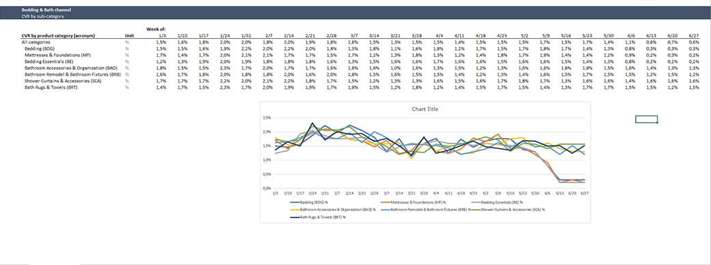
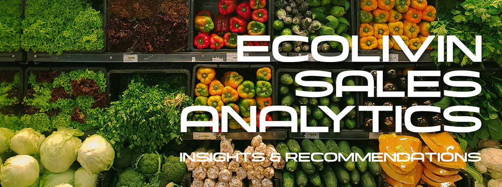

Return on Advertising Spend (ROAS) June 2022 Analysis
In June 2022, the marketing team at Wayfair experienced a decline in their Return on Advertising Spend (ROAS). They want to determine the root causes of this decline and improve it as quickly and effectively as possible before entering the next quarter. Their marketing manager requires hypotheses, in-depth analysis of the root causes, insights, recommenda/ons, and strategies to effectively restore ROAS and increase product sales.
Click here to access the repository
EcoLivin Sales Analytics
This case study project is the final assignment of the second module of my data analytics course at Refocus Indonesia. I will create a report, analyze and visualize the dataset of sales transactions from EcoLivin, a healthy food and beverage distribution company, and provide insights and recommendations. The analysis and visualization are relatively simple as part of my exercise to explore the data and derive insights from the exploration results. I chose to use Google Spreadsheet for this task because it is straightforward to use, and the data processed is not extensive. The process itself is not overly difficult since the given data is simple, not too extensive, and does not require data cleaning or transformation. However, it is also not easy as it involves creating analyses from pivot tables for various business metrics and providing insights, recommendations, and even transaction projections for the next quarter.
Click here to view the visualizations
The Look E-Commerce Asia's Business Growth
In this case study project, I am conducting an analysis and will create a report containing data visualizations, insights, and recommendations for The Look E-commerce dataset, which I previously analyzed. The difference this time is that I am analyzing the data for the year 2022.
The analysis I am conducting aims to understand the sales and business development in Asian countries over a 12-month period, specifically focusing on Japan, South Korea, and China. I performed the data exploration process using pgAdmin4/PostgreSQL, and the analysis and visualization were carried out using Google Spreadsheets.
Click here to view the visualizations
Walmart Data Storytelling
This is my case study project, which is fairly simple and straightforward. It involves reading data visualizations, analyzing them, and providing highlights, insights, and recommendations for the company/stakeholders. The case study focuses on the sales performance of products and its relationship with customers at Walmart in 2022. Precision and attention to detail are required to analyze this data in order to provide accurate insights and recommendations that can be quickly executed by the stakeholders.